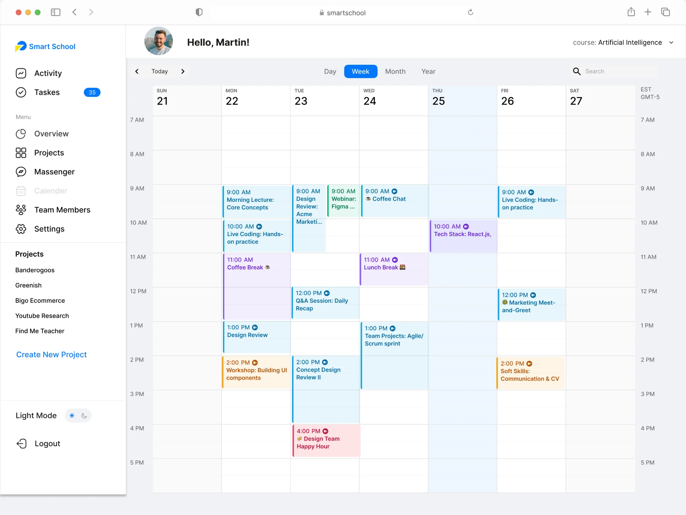
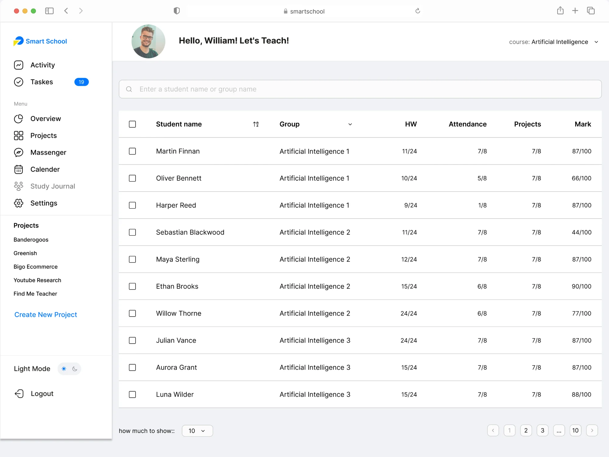
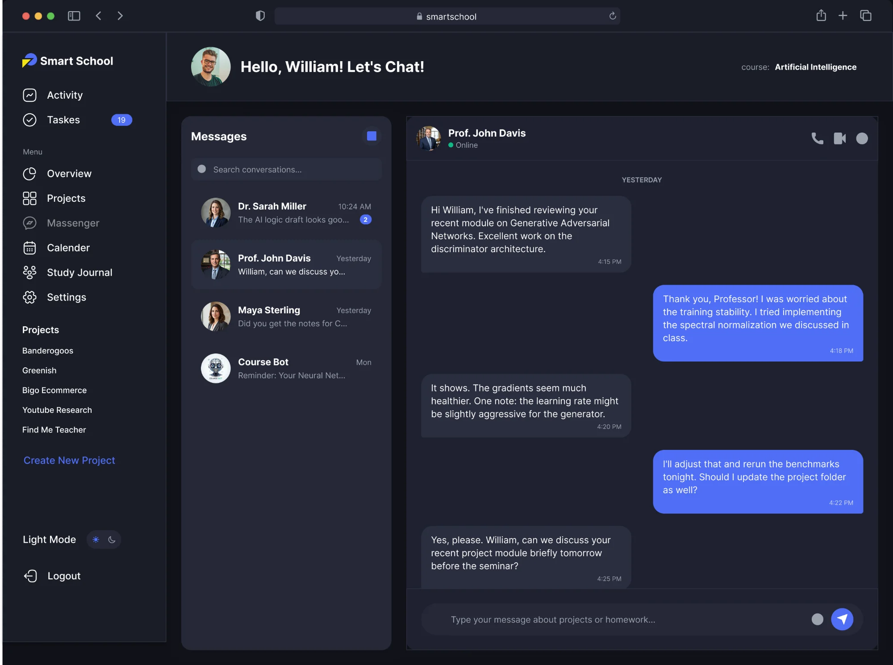

A high-density SaaS platform for AI & IT education — a modular dashboard and a centralised calendar hub that turn complex academic data into one clear, scalable interface.
Smart School is a technical UI/UX project focused on designing a high-density SaaS platform for AI and IT education. My task was to engineer a modular dashboard system that organises complex academic data, grading matrices and intensive schedules into a clear, scalable interface.
Immersed in the user journey to understand the emotional and technical friction inside students’ and tutors’ daily academic routines.
Synthesised research into four core challenges: cognitive overload, data fragmentation, scheduling friction and a lack of visual hierarchy.
Crafted a robust style guide — a strict modular grid, a screen-optimised typeface and a functional colour palette — to ensure interface scalability.
Engineered a high-fidelity dashboard and a centralised calendar hub to deliver a seamless, unified experience for every platform user.
Managing vast amounts of academic data for complex AI projects leads to administrative burnout. Manual grading and attendance for large groups is slow and error-prone.
A data-dense “Teacher’s Journal” for rapid sorting, automated grade management and clear visualisation of student motivation.
Overwhelmed by the high-intensity schedule and technical demands of the AI curriculum. Hard to track progress across homework, expertise and upcoming live-coding sessions.
A centralised dashboard to watch milestones in real time, see the day at a glance and reach mentor support to close knowledge gaps.
Students and teachers struggle with the massive volume of complex AI curriculum data and fragmented educational metrics.
Grades, attendance and schedules are scattered across different tools, leading to poor academic management.
Existing interfaces fail to prioritise critical alerts and milestones, making it hard to focus on what matters most.
Managing high-intensity IT course timelines is hard without a centralised, visual hub that updates in real time.
Three roles, one platform. Switch role, then tap any step to see where it leads and the edge cases it handles.
A unified sidebar, a personalised dashboard, a colour-blocked calendar, a data-dense journal and an in-app messenger — one system that resolves the four frictions and gives every role a single source of truth.
One sidebar folds projects, messaging and schedules together — resolving Data Fragmentation.
Profile-specific metrics and a direct greeting make a dense tool feel human.
Star ratings and high-contrast bars give instant feedback on performance.

Distinct visual time-blocks let users recognise different session types instantly — lectures, live coding, reviews and breaks — removing Scheduling Friction. Day / Week / Month / Year views keep the whole timeline one click away.
The journal answers Alex’s goal directly: rapid sorting and search, grouped cohorts, and grade / attendance columns tuned for scanning large groups without losing the row you care about.

A token-driven theme lets the in-app messenger — and every surface — switch between light and dark without a redesign, cutting eye-strain for long study sessions and meeting accessibility expectations.

Inter was designed for screens. It balances technical precision with high readability — essential when the interface is dense with grading matrices and schedules.
A functional palette: blues carry the core UI, warm accents flag status and progress, soft tints hold dense data blocks apart.